A Day in Chicago
Follow me through a day over my spring break while visiting my sister at The School of the Art
Institute of Chicago! Impressively, I stayed awake from 10 AM to 11 PM, scroll to view my day in
hourly
photos!
Hour 1 [ 10:16 ]
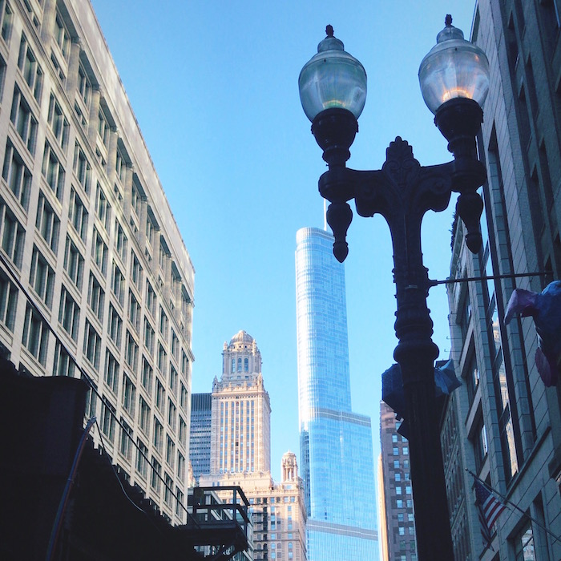
This photo is from a sunny Chicago morning on Thursday, March 1st. On the
way to breakfast, we stopped to admire the city's amazing arcitecture.
Hour 2 [ 11:07 ]
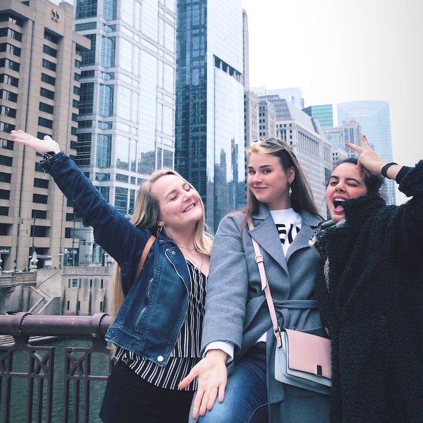
Pictured from left to right is my twin sister Jenny, and my two roomates,
Dasha and Damla. Together, we explored Chicago. Jenny goes to school in the city and knew
all
the best spots! Here they are pictured in front of the lake that was just dyed green for St.
Patricks Day. They may look happy here, but we were all pretty hangry. They
are very good actresses.
Bravo.
Hour 3 [ 12:32 ]
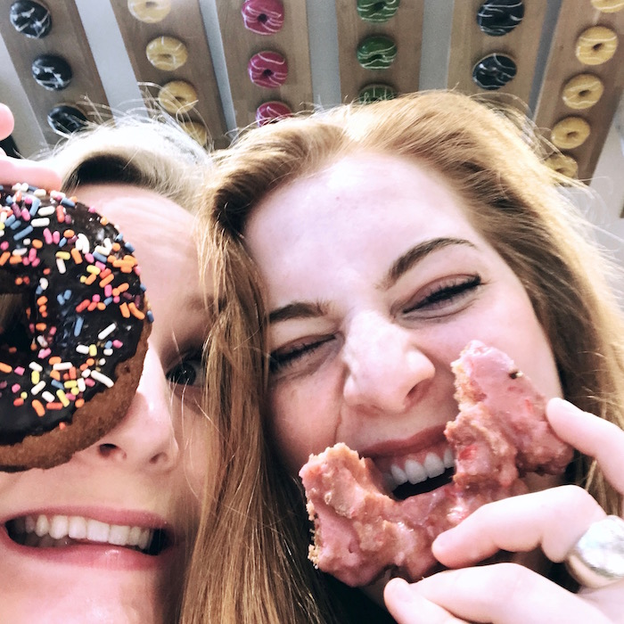
Breakfast time! At noon we stopped by Stan's Donuts, a local chain, to grab
donuts and coffee. I ate a pistachio donut-much better than expected !
Hour 4 [ 1:26 ]
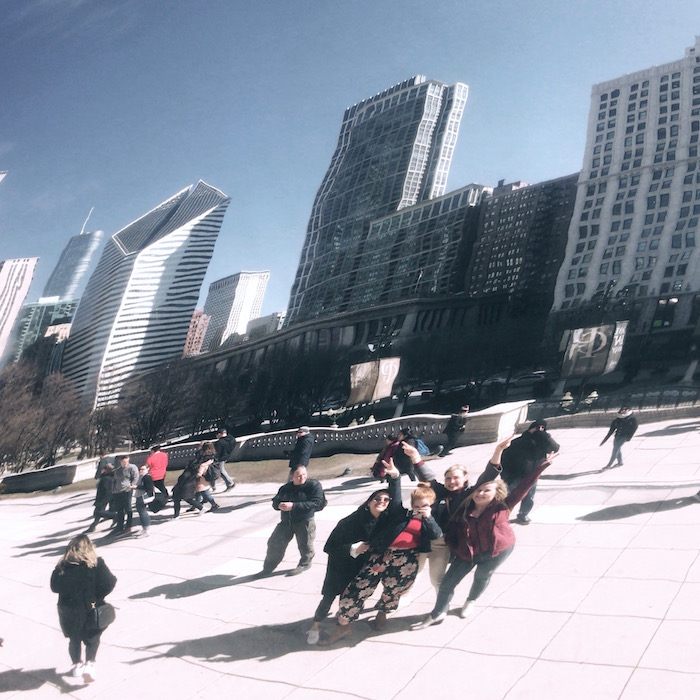
A classic bean pic ! Although we were with a local, we had to do all the
cheesy tourist activities too ! Here is a pic of all of us in the reflection of The Bean, a
sculpture in Millenial Park. Fun fact: "The Bean" is just a nickname for the real sculpture
title,
"Cloud Gate" after the way it reflects the sky.
Hour 5 [ 2:02 ]
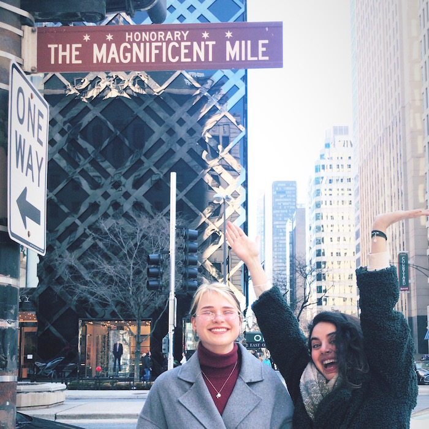
In the afternoon we walked the Magnificant Mile and did some window
shopping. Because we couldn't bring any liquids on the plane, every morning we stopped by the
Macy's perfume counter and just
laid it on thick! The ladies working there started getting really annoyed by the end of the
week.
Hour 6 [ 3:40 ]
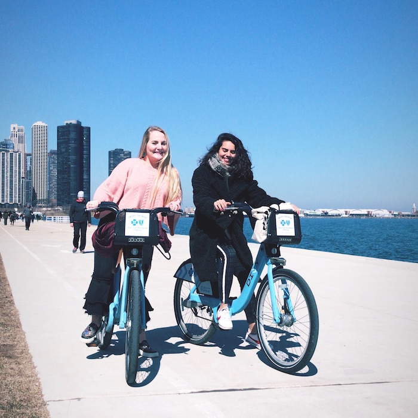
Mid-day, we rented bicycles and rode by the Navy Pier which features a
beautiful view of the skyline and Lake Michigan. I tried to take pictures while riding my
bike and I literally fell off. There is also no railing between the sidewalk and Lake
Michigan ! A
very dangerous situation for uncoordinated people like myself. The weather
this day was surprisingly warm! It was the first day since Autumn that the lake had been
defrosted. The water was so clear and bright which made it reflect the skyline
beautifully.
Hour 7 [ 4:37 ]
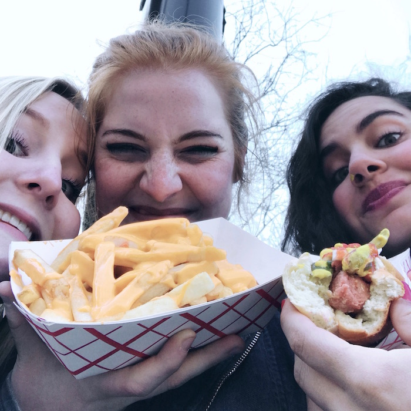
As a snack, we stopped by a foodtruck to get cheese fries and a
Chicago-style hotdog ! T'was delicious.
Hour 8 [ 5:22 ]
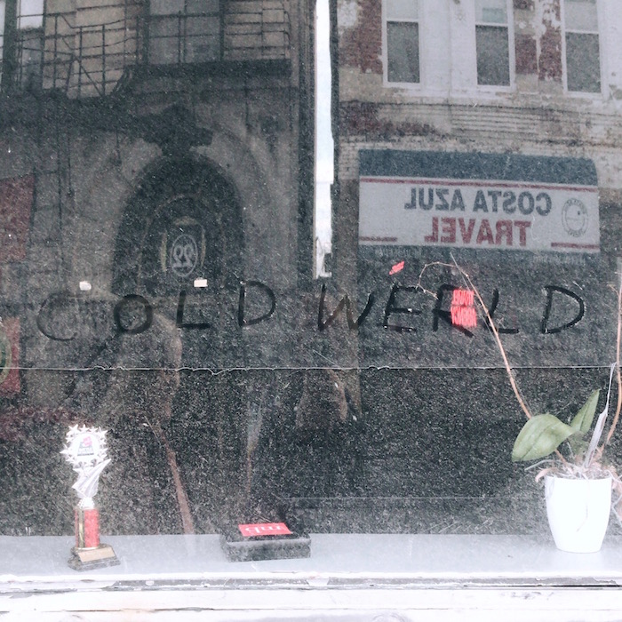
We took the pinkline on the above ground train to a neighboorhood called Pilson for some
thrift and vintage shoppping. In this photo, someone had wrote "old werld" in the dust on a
store window. I thought it was funny, thus, a picture was born.
Hour 9 [ 6:41 ]
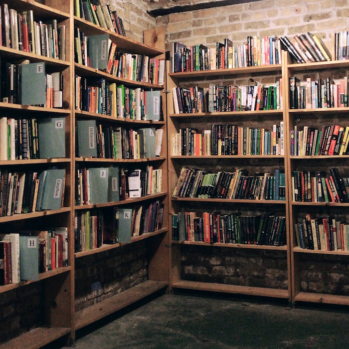
Nearby, we stopped into a bookstore. There were techinically no phones
allowed for some reason but I was feling rebellious so this is a snapshot I took of the
mystery
section !
Hour 10 [ 7: 10 ]
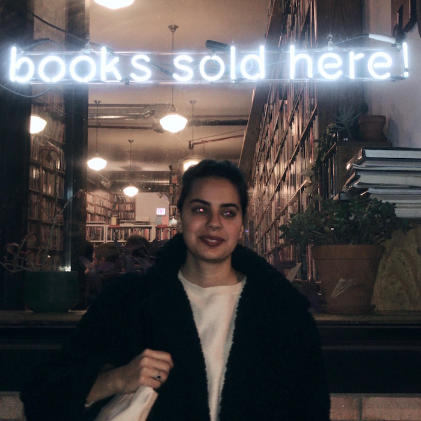
Outside another bookstore ! We love to browse !
Hour 11 [ 8:13 ]
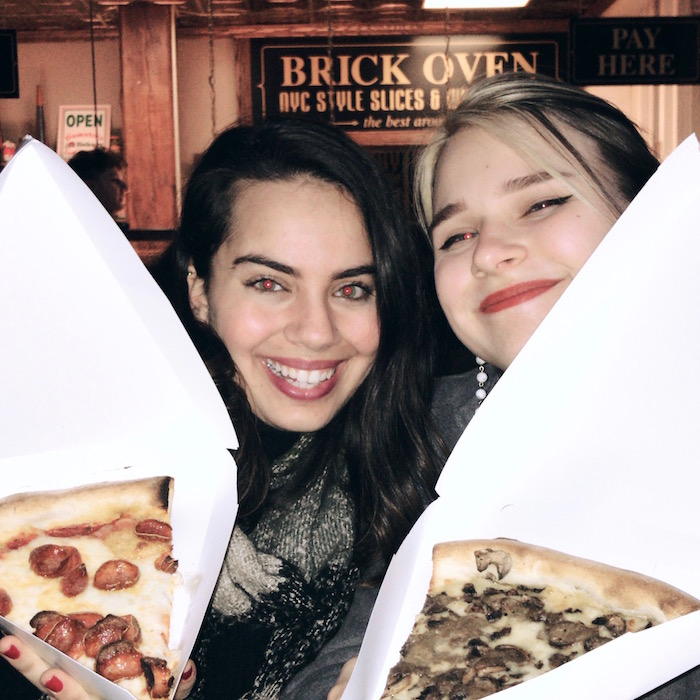
Late dinner at Dough Bro's
pizza ! It was hard to find thin crust pizza in Chicago but finally we satisfied our
East Coast cravings !
Hour 12 [ 9:00 ]
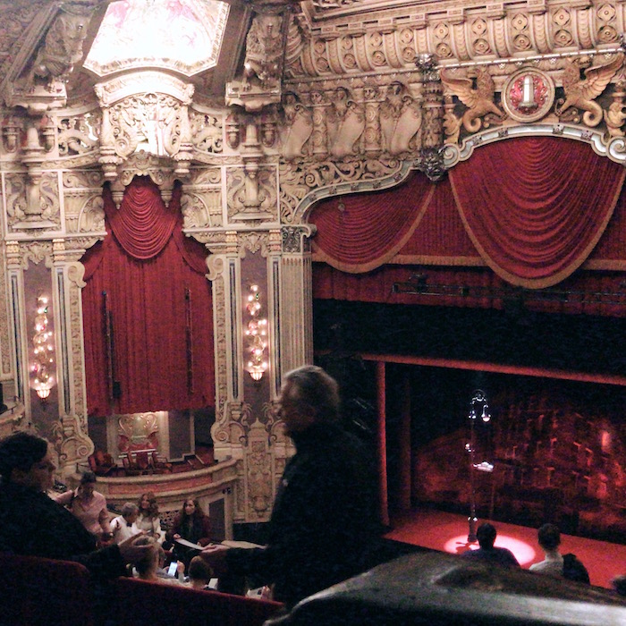
At the James M. Nederlander Theatre, we saw "A Bronx Tale"
the musical. Less well known but nevertheless a great soundtrack.
Hour 13 [ 10:44 ]
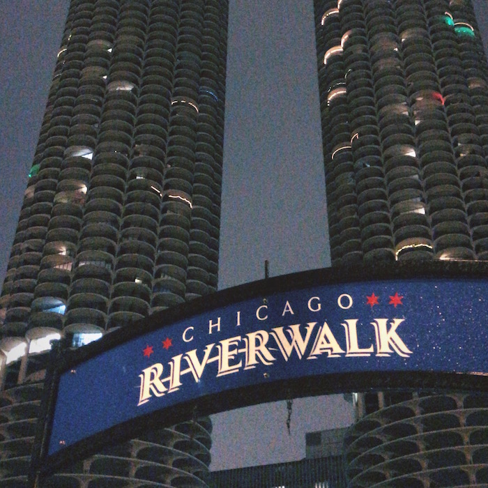
Torwards the end of the night, the weather got a lot colder and the sky a
lot foggier. This is a picture of the skyskrapers as we walked around at night.
Hour 14 [ 11:03 ]
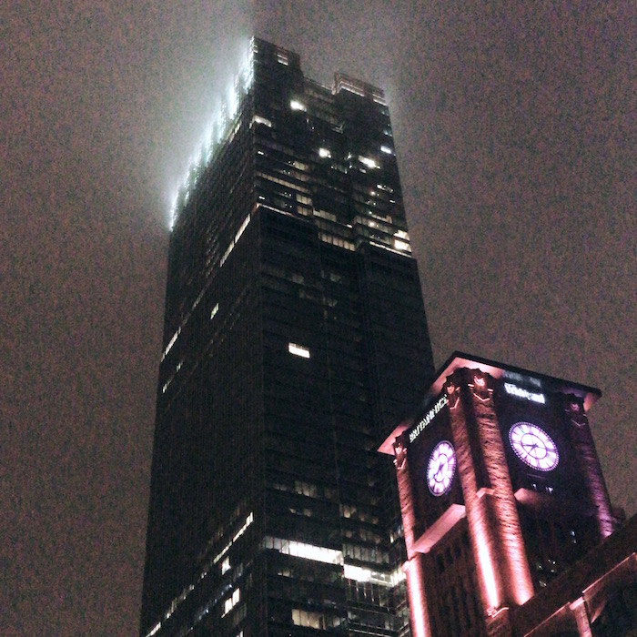
This is another image where I tried to capture the buildings fading into
the fog. A gloomy end to a sunny day.